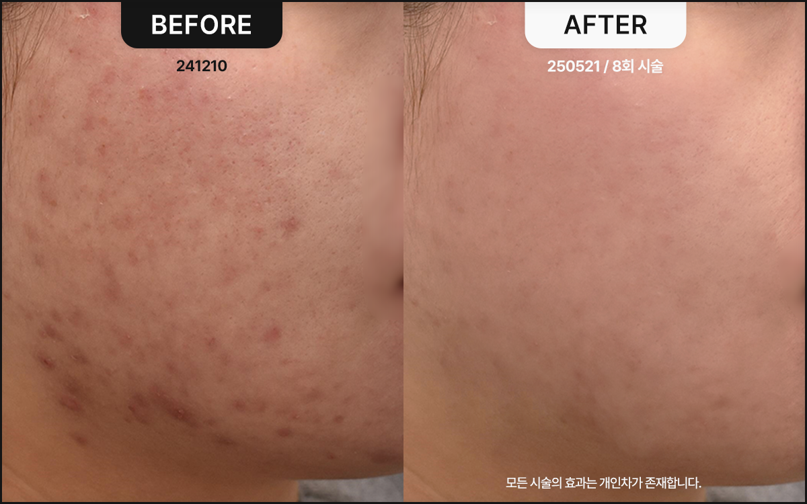
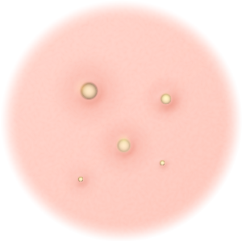
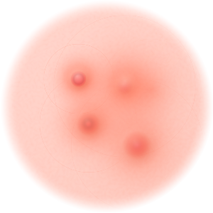
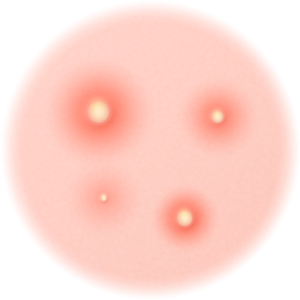
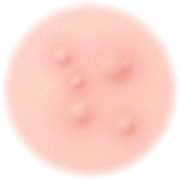
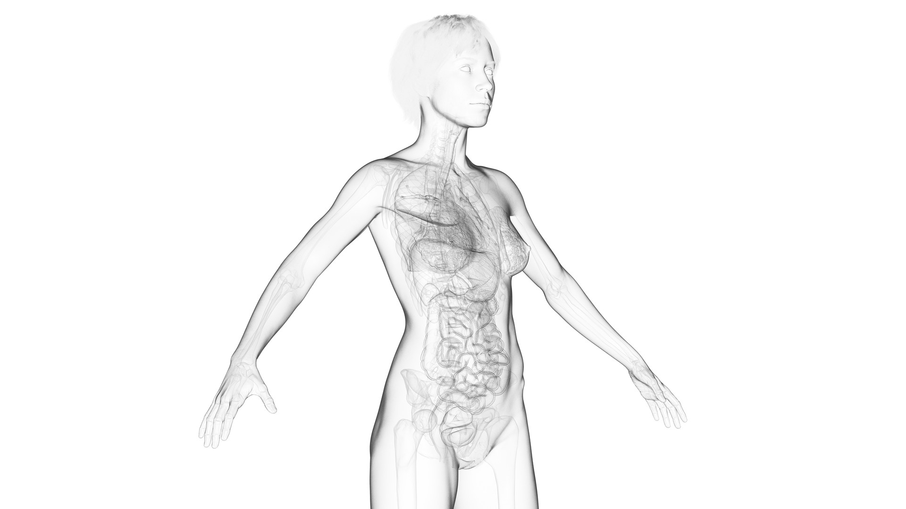
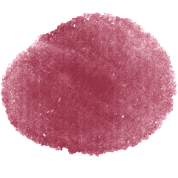

스킨비책
피부 트러블의 근본 원인을 해결하는 핵심 비책
스킨비책 (Skin Herbal Medicine) 여드름은 다양한 외부의 자극에 의해서도 발생하지만, 체내의 불균형이 보다 중요한 주요 원인이 됩니다. 피지를 억제하고 내부 요인을 해결하는 한약을 처방하여 깨끗한 피부로 치유될 수 있도록 돕습니다. 복용기간 경과에 따라 1~3달 식이조절



여드름 치료, 우선 모양으로 확인하세요
면포성 여드름 모공이 막히면서 면포가 생성된 상태지만, 염증은 발생하지 않은 여드름으로 방치하면 염증성으로 발전 할 수 있습니다. 폐쇄성 면포(화이트헤드) 와 개방성 면포(블랙헤드) 로 구분됩니다.
구진성 여드름 흔히 뾰루지 로 불리며, 면포성 여드름에서 진행된 단계로 염증을 동반 하고 있습니다. 붉은색의 형태로 고름이 있지만 쉽게 압출되지는 않는 상태입니다.
농포성 여드름 피부에 염증 반응이 나타나면서 고름과 농이 찬 형태로, 손톱이나 잘못된 압출로 인해 패인 흉터와 자국 이 생기기 쉽습니다.
결절성 여드름 화농성 여드름에서 악화된 단계로, 크기가 크고 통증이 있습니다. 단단한 형태로 피부 깊숙히 자리잡고 있으며 압출이 어렵고 치료 기간도 오래 걸립니다.



오장육부의 불균형,
여드름을 키우다?
여드름은 체내 원인에 외부 자극이 복합적으로 작용하여 과도한 피지 및 각질 생성이 유발되어 발생합니다.
불균형한 체열 내부 장기 문제 잘못된 생활습관 유전적 요인 내부 원인 치료 배독요법으로 체내의 열과 독소를 배출하고 면역력을 개선시킵니다.
환경 개선 지도 식이습관, 생활습관 등의 홈케어 지도로 여드름이 발생하는 환경요인을 교정합니다.


스 킨비 책이란?
5가지 문제 원인을 한약으로 바로잡아
여드름 질환 개선을 돕습니다.
나에게 알맞는 약재 구성을 통해 염증 개선과 피지 분비 상황을 정상화시키고, 얼굴과 두피로 집중되는 열이 원활히 순환하도록 돕습니다.
불균형한 장부를 바로잡아 피부 염증이 재발하지 않도록 체질을 개선시킵니다.


일반 항생제, 피지억제제는
다양한 부작용의 우려가 있습니다.
반드시 주의하세요.
항생제 부작용 위 통증, 알러지 반응, 신장 기능 저하, 간 기능 저하, 신경계 증상 등 피지억제제 부작용 피부건조증, 구순염, 피부발진, 근육통, 관절통, 두통, 안구 자극, 간 수치 상승, 빈혈, 고중성지방혈 등
스킨비책 추천 대상
항생제, 피지억제제 복용의
부작용이 걱정되시는 분 일시적인 치료가 아니라 체질적으로 여드름을 개선하고 싶으신 분 피부가 예민하고 트러블이 잦은 분
가장 건강한 아름다움을 드릴
메디컬블룸한의원의 약속
1:1 피부 컨디션 & 디자인 상담
원장님과의 충분한 상담을 통해 개인의 고민 부위와 피부 컨디션, 피부 특성을 꼼꼼히 체크합니다. 고객님이 추구하는 아름다움과 얼굴 상태를 모두 고려하여 가장 알맞는 퍼스널 페이스 디자인을 제안해드립니다.
한의원장 2인의
특별한 전담관리
상담부터 시술까지 내 가족, 지인의 피부라 생각하며 누구보다 꼼꼼하고 섬세하게 관리합니다. 피부 미용에 한의학적 시선을 접목, 혈맥과 근육 자극을 더하여건강과 아름다움 모두를 달성합니다.
부작용 없는 건강한 아름다움
고객님의 피부 건강과 만족도를 가장 중요하게 여깁니다. 시술 후의 마음 아픈 부작용이 없도록 검사와 상담 단계에 만전을 기하며 약침과 한약의 재료는 우리 몸에 순한 천연 한약재만을 고집합니다.
정품 프리미엄 기기와
정량 시술
메디컬블룸이 고객님께 사용하는 모든 기기와 약품은 정품으로, 내 얼굴에 더하지도 덜하지도 않은 맞춤 정량으로만 시술합니다.